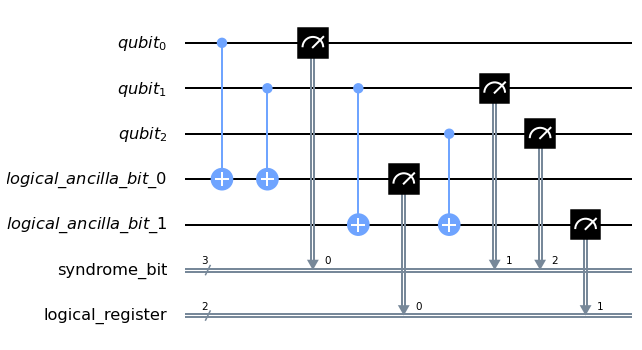
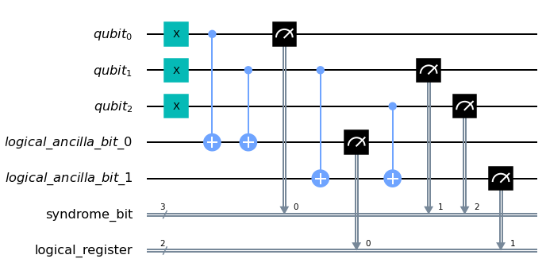
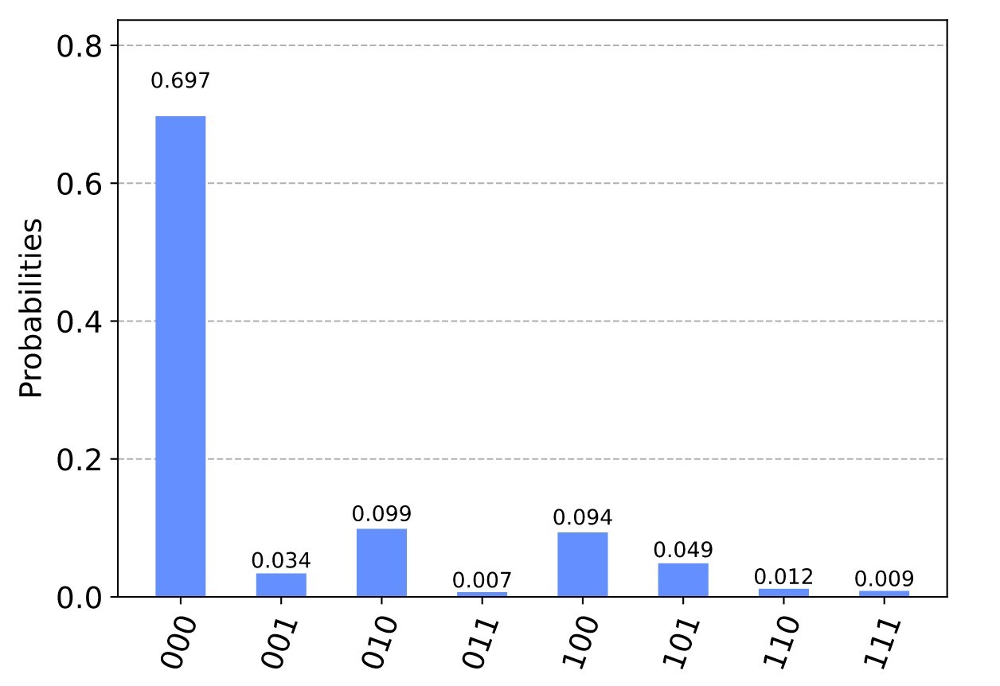
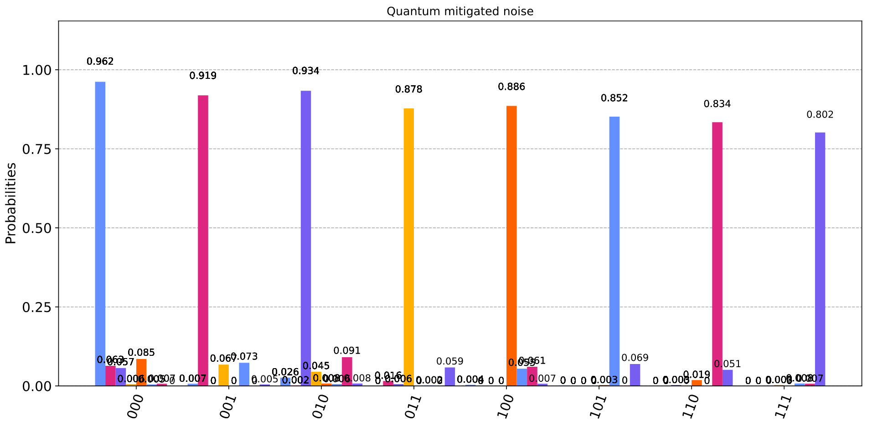
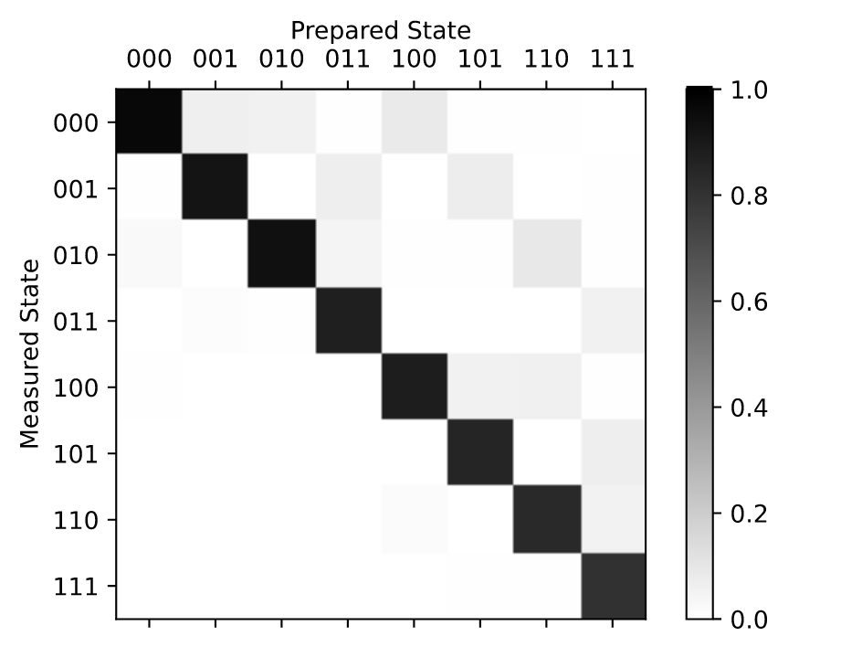
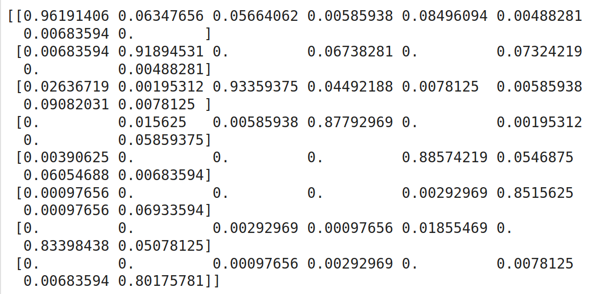
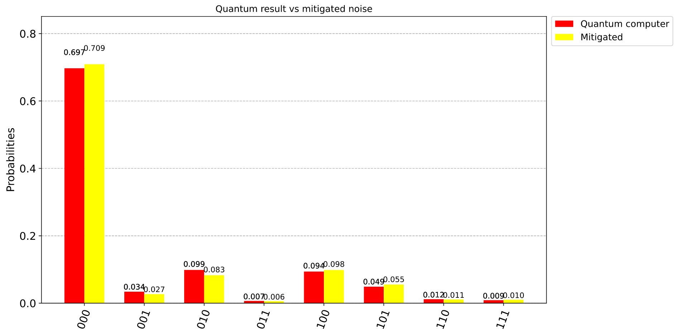

logical qubits qubits che ci aspettiamo
costruire logical from physical qubits(ampio numero di physical qubits) tramite il processo chiamato quantum error correction,
Repetition code
Surface code
metodi :
Syndrome measurements
Decoding
Logical operations
p = probabilità di non comprendere
P
a = max accettabile probabiltà accettabile
generalmente p << P
a
se si ripete più volte minor possibilità di comprensione errata
`P = sum_(n=0)^|d/2| ((d),(n)) p^n(1-p)^(d-n) ~ (p/(1-p))^|d/2|`
dove d è il numero di ripetizioni e più aumenta d e più P si riduce in modo esponenziale
fino a raggiungere livelli accettabili.
input `rarr` ENCODING `uarr`
NOISY`darr` DECODING dopo d volte `rarr` output
Questo metodo però crea problemi quando siamo in presenza di una superposition perchè la fase
di measurement modifica lo state vector.
Per ovviare a questo inconveniente si procede a non verificare il valore del qubit ma a
verificare quelli che hanno un valore diverso da quello atteso. Nell'immagine sottostante possiamo
notare che il # viene inserito ad ogni cambio di stato.
`darr`
`darr`
| 0 |
#1 |
1 |
#0 |
0 |
#1 |
#0 |
0 |
#1 |
#0 |
from qiskit import QuantumRegister, ClassicalRegister
q = QuantumRegister(3,'qubit')
ancilla = QuantumRegister(2,'logical_ancilla_bit')
syndrome = ClassicalRegister(2,'syndrome_bit')
link = ClassicalRegister(2,'logical_register')
qc = QuantumCircuit(q,ancilla,syndrome,link)
qc.cx(q[0],ancilla[0])
qc.cx(q[1],ancilla[0])
qc.cx(q[1],ancilla[1])
qc.cx(q[2],ancilla[1])
qc.measure(ancilla,syndrome)
qc.draw(output='mpl')

counts = execute( qc, Aer.get_backend('qasm_simulator'),shots=5000)).result().get_counts()
print('Results:',counts)
Results: {'00 000': 5000} con 5000 esecuzioni ed il risultato dei 2 registri rispettivamente 00 e 000.
Proviamo ora con la simulazione con 111
from qiskit import QuantumRegister, ClassicalRegister
q = QuantumRegister(3,'qubit')
ancilla = QuantumRegister(2,'logical_ancilla_bit')
syndrome = ClassicalRegister(2,'syndrome_bit')
link = ClassicalRegister(2,'logical_register')
qc = QuantumCircuit(q,ancilla,syndrome,link)
qc.x(q[0])
qc.x(q[1])
qc.x(q[2])
qc.cx(q[0],ancilla[0])
qc.cx(q[1],ancilla[0])
qc.cx(q[1],ancilla[1])
qc.cx(q[2],ancilla[1])
qc.x(q[2])
qc.measure(ancilla,syndrome)
qc.draw(output='mpl')

counts = execute( qc, Aer.get_backend('qasm_simulator'),shots=5000)).result().get_counts()
print('Results:',counts)
Results: {'logical qubit 00 circuit qubit 000': 5000} con 5000 esecuzioni ed il risultato dei 2 registri rispettivamente 00 e 000.
Abbiamo visto le similazioni senza noisy ora introduciamo degli errori sia in fase di misurazione
che in fase di applicazione dei gates. In Qiskit il componente Ignis ci fornisce gli strumenti per
operare nella QEC.
Vediamo la differenza con diversi valore di errori inseriti negli esempi sottostanti.
#### Inserimento NOISY ####
from qiskit.providers.aer.noise import NoiseModel
from qiskit.providers.aer.noise.errors import pauli_error, depolarizing_error
def noise(measureErr,gateErr):
Emeas = pauli_error([('X',measureErr), ('I', 1 - measureErr)])
Egate1 = depolarizing_error(gateErr, 1)
Egate2 = Egate1.tensor(Egate1)
# applicazione errori measurement, gate singolo e multigate
noise = NoiseModel()
noise.add_all_qubit_quantum_error(Emeas, "measure")
noise.add_all_qubit_quantum_error(Egate1, ["x"])
noise.add_all_qubit_quantum_error(Egate2, ["cx"])
return noise
from qiskit import QuantumRegister, ClassicalRegister
q = QuantumRegister(3,'qubit')
ancilla = QuantumRegister(2,'link_ancilla_bit')
syndrome = ClassicalRegister(3,'syndrome_bit')
link = ClassicalRegister(2,'link_register')
qc = QuantumCircuit(q,ancilla,syndrome,link)
qc.x(0)
qc.x(1)
qc.x(2)
qc.cx(q[0],ancilla[0])
qc.cx(q[1],ancilla[0])
qc.cx(q[1],ancilla[1])
qc.cx(q[2],ancilla[1])
qc.measure(q,syndrome)
qc.measure(ancilla,link)
qc.draw(output='mpl')
#### esempio con error measure 0,1 e gate 0,1 ####
noise1 = noise(0.01,0.01)
### 1000 ripetizioni errori 101 = 10,1%###
counts = execute( qc, Aer.get_backend('qasm_simulator'),shots=1000, noise_model=noise1).result().get_counts()
print('Results:',counts)
Results: {'00 001': 1, '10 011': 8, '10 101': 5, '10 111': 22, '11 010': 1, '11 101': 7, '00 011': 16, '00 101': 8, '00 110': 12, '00 111': 899, '01 110': 2, '01 111': 19}
### 5000 ripetizioni errori 478 = 9,56%###
counts = execute( qc, Aer.get_backend('qasm_simulator'),shots=5000, noise_model=noise1).result().get_counts()
Results: {'10 001': 1, '10 011': 19, '10 100': 2, '10 101': 23, '10 111': 89, '11 011': 1, '11 100': 1, '11 101': 19, '11 111': 5, '00 010': 1, '00 011': 68, '00 100': 1, '00 101': 66, '00 110': 73, '00 111': 4522, '01 011': 2, '01 101': 4, '01 110': 23, '01 111': 80}
#### esempio con error measure 0,2 e gate 0,2 errori 1005 = 20,1% ####
noise1 = noise(0.02,0.02)
counts = execute( qc, Aer.get_backend('qasm_simulator'),shots=5000, noise_model=noise1).result().get_counts()
print('Results:',counts)
Results: {'00 001': 7, '10 001': 2, '10 010': 3, '10 011': 61, '10 100': 3, '10 101': 49, '10 110': 6, '10 111': 168, '11 001': 1, '11 011': 1, '11 100': 2, '11 101': 53, '11 110': 2, '11 111': 8, '00 010': 7, '00 011': 108, '00 100': 3, '00 101': 132, '00 110': 141, '00 111': 3995, '01 010': 1, '01 011': 1, '01 100': 1, '01 101': 10, '01 110': 41, '01 111': 194}
Come è facile dedurre magggiori sono gli errori e maggiore è la difficoltà di avere un risultato chiaro fino ad arrivare
con elevati percentuali di errori ad avere la stessa probabilità di esito tra i diversi valori attesi.
Finora abbiamo visto il circuito in esecuzione tramite la simulazione di un computer quantistico
mentre ora eseguiremo il circuito su di un vero computer quantistico tramite IBMQ.
from qiskit import *
from qiskit.tools.visualization import plot_histogram
IBMQ.load_account()
provider = IBMQ.get_provider(hub='ibm-q')
computer = provider.get_backend('ibmq_16_melbourne')
q = QuantumRegister(3,'qubit')
ancilla = QuantumRegister(2,'logical_ancilla_bit')
syndrome = ClassicalRegister(3,'syndrome_bit')
link = ClassicalRegister(2,'logical_register')
qc = QuantumCircuit(q,ancilla,syndrome)
qc.cx(q[0],ancilla[0])
qc.cx(q[1],ancilla[0])
qc.cx(q[1],ancilla[1])
qc.cx(q[2],ancilla[1])
qc.measure(q,syndrome)
#qc.measure(ancilla,link)
qc.draw(output='mpl')
job = execute(qc, backend=computer, shots= 1024)
print(job.job_id())
result = job.result()
plot_histogram(result.get_counts())

Ora creiamo per il circuito sopra descritto sempre sullo stesso computer quantistico un circuito tramite
qiskit Ignis per mitigare gli effetti degli errori(noise) provocati dalle operazioni eseguite nel
circuito.
from qiskit.ignis.mitigation.measurement import (complete_meas_cal,CompleteMeasFitter)
computer = provider.get_backend('ibmq_16_melbourne')
circuitoCms , labelState = complete_meas_cal(qr = qc.qregs[0] , circlabel ='measerrormitigationcal')
len(circuitoCms) #2 elevato n.ro qubits
circuitoCms_job= execute(circuitoCms, backend= computer, shots = 1024, optimization_level=0 )
resultCms = circuitoCms_job.result()
print(resultCms.get_counts())
len(circuitoCms)
[{'000': 985, '001': 7, '010': 27, '100': 4, '101': 1}, {'000': 65, '001': 941, '010': 2, '011': 16}, {'000': 58, '010': 956, '011': 6, '110': 3, '111': 1}, {'000': 6, '001': 69, '010': 46, '011': 899, '110': 1, '111': 3}, {'000': 87, '010': 8, '100': 907, '101': 3, '110': 19}, {'000': 5, '001': 75, '010': 6, '011': 2, '100': 56, '101': 872, '111': 8}, {'000': 7, '010': 93, '100': 62, '101': 1, '110': 854, '111': 7}, {'001': 5, '010': 8, '011': 60, '100': 7, '101': 71, '110': 52, '111': 821}]
8
plot_histogram(resultCms.get_counts(),figsize=(15, 7),title='Quantum mitigated noise')
Nel grafico sottostante si vedono per ogni valore possibile la probabilità

meas_fitter = CompleteMeasFitter(resultCms,labelState)
meas_fitter.plot_calibration()

print(meas_fitter.cal_matrix)
# visione in forma di matrice del risultato del circuito

qcmitigated = meas_filter.apply(result)
mitigated = qcmitigated.get_counts(0)
melborneQc = result.get_counts()
plot_histogram([melborneQc , mitigated ], legend=['Quantum computer', 'Mitigated '] , color=['red', 'yellow'],figsize=(12, 7),title='Quantum result vs mitigated noise')
Nel grafico si può notare che la probabilità è maggiore con la versione con errore mitigato rispetto
alla esecuzione effettuata nel computer quantistico
